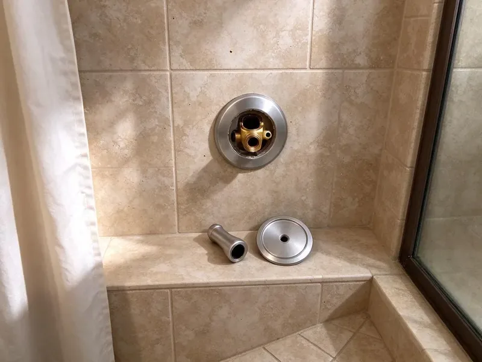

Bathroom Plumbing in Charleston, SC
Toilet that runs all night in your Charleston home? KBN Plumbing replaces the flapper or fill valve and looks over the bolts and supply line.
- Repair or Full Installation
- Quick Local Service
- Upfront Pricing
- Toilets, Faucets and Showers
Upgrade or Repair Your Bathroom Plumbing in Charleston, SC.
Our plumbers keep common fixture parts on the truck, so most repairs are done in one trip.
Complete Bathroom Plumbing in Charleston, SC for Every Fixture
KBN Plumbing keeps the bathroom working in Charleston, SC homes, which matters more than people think until it stops. Losing a bathroom disrupts everything. We work on every faucet, drain and fixture in the room, and we look for the small leak at the supply stop or the drain nut that is quietly rotting the vanity floor.
Some of what we do:
- Toilet repair, replacement and wax ring resets
- Pressure-balance shower valve installs
- Slow drain and clog clearing

Additional Bathroom Plumbing Services in Charleston, SC
From toilets to showers, our bathroom plumbing team in Charleston, SC repairs, installs, and replaces every fixture with clean, code-compliant work.


Customers
Why Choose KBN Plumbing for Bathroom Plumbing in Charleston, SC?
Small bathroom leaks waste a surprising amount of water and can damage subfloors and vanities. We fix them quickly and correctly so you do not pay for the same repair twice.
- Good Parts, We install brand-name parts that match your fixtures, so repairs last.
- Licensed and Insured, Our plumbers are licensed, insured and trained on current code.
- Local Knowledge, We know how local homes were plumbed in Charleston, including how local water and soil affect fixtures.
Citywide Coverage
From powder rooms to primary suites, we handle bathroom plumbing throughout Charleston. We work around your schedule. We protect floors, tile and tubs and clean up before we go, so the only sign we were there is a working fixture.
Experienced Team
Every crew member is trained in both repair and installation. Repair or replace, both work. One plumber can fix a cartridge or install a new shower system, and they explain the options plainly so you can decide.
Safety-First Approach
Your household's safety comes first on every bathroom job. Hot water gets checked. Plumbers follow strict practices, gas lines to water heaters included, and confirm the work meets or beats local rules.
Trusted Certified Charleston Plumbing Services Professionals
At KBN Plumbing, we are proud to offer certified plumbing services throughout Charleston, SC. Credentials matter in this trade. Our plumbers hold recognized industry credentials, and they follow strict safety and quality rules on every repair, installation and maintenance call we run.
Call Us Now PHCC Plumbing Contractor Recognition
PHCC Plumbing Contractor Recognition Better Business Bureau (BBB) Accreditation
Better Business Bureau (BBB) Accreditation Angi Certified Pro
Angi Certified Pro ISO 9001 Quality Management Certification
ISO 9001 Quality Management CertificationToilet, Faucet and Shower Repair in Charleston, SC
Urinal Installation and Commercial Bathroom Plumbing in Charleston
Commercial restrooms take a beating every day. Flush valves wear out fast. KBN Plumbing installs urinals with the right supply and drain connections under commercial plumbing code, plus repairs flushometers, sensors and drains in high-traffic restrooms to keep downtime short. Charleston businesses get flexible scheduling.

Toilet Installation and Replacement in Charleston, SC
Cracked, wasteful or worn-out toilets are usually better replaced. We haul the old one away. New WaterSense, comfort-height and wall-hung toilets from TOTO, Kohler and American Standard come with a new wax ring, bolts and supply line.
Water Pressure and Flow Issues in Charleston
Weak pressure in one shower usually means scale in the head or cartridge. Clean the head first. Most municipal water in South Carolina comes from rivers and reservoirs, so it tends to run soft and leaves less scale than in many other states. When the whole house is weak, we test pressure at a hose bib to see if it is the regulator, the main or a half-closed valve.
Toilet Repair in Charleston
Leaking or running toilets can waste hundreds of gallons a day. Chlorine eats flappers. Flappers, fill valves and flush valves get replaced, rocking toilets get a flange repair and new wax ring, and bad tank bolts and supplies get fixed.
Commercial Bathroom Plumbing and Urinal Installation in Charleston, SC
Busy restrooms need fixtures that hold up to heavy use. Flush valves take a beating. We install and repair commercial toilets, flushometers, urinals and ADA-compliant sinks and faucets from Sloan, Zurn and other commercial brands, and we can schedule after hours to avoid disrupting customers and employees.
Shower Repair and Valve Replacement in Charleston, SC
Showers that drip, swing hot and cold or won't shut off usually need a new cartridge. Old valves may need replacing. We replace pressure-balance and thermostatic cartridges and full valves inside the wall, and when the wall has to be opened, we come in from the back side whenever there's a closet or bedroom behind it. We also replace showerheads, diverters and tub spouts.
Shower Installation in Charleston
New shower valves, rain heads, handhelds and body sprays all go in during remodels. Valve depth matters. We set valve depth and blocking, coordinate with your tile installer, add curbless or walk-in drains and pressure test before the walls close.

Faucet Repair and Replacement Options in Charleston, SC
Dripping faucets raise the water bill a little every month. It's usually a cheap part. Our plumbers replace cartridges, O-rings and seats on most bathroom faucets, and when a repair isn't worth it, we install a new faucet with new supply lines so the whole connection is leak-free in your bathroom.
Local Bathroom Plumbers in Charleston, SC
We know the bathrooms in Charleston homes. Some brands show up everywhere. Many neighborhoods were built with the same faucets and valves, so we often know which cartridge your shower takes before we take the handle off, which saves time and cost.
Local plumbers know local plumbing. The water here matters. Hard water, old galvanized lines and the common local brands shape our repairs, so we recommend fixes that last.
KBN Plumbing at a Glance
- Licensed and insured plumbers serving Charleston, SC
- Same-day appointments and 24/7 emergency response
- Upfront, flat-rate pricing before work begins
- 4.8-star rated by 596+ South Carolina customers
Charleston Map
Charleston Information
- Population
- 155,369
- Area codes
- 843/443/803
- Service area
- Charleston and towns within a 40 mile drive
- Nearby
- Mount Pleasant, North Charleston, Goose Creek, Summerville
Bathrooms in Charleston, SC run more water than anywhere else in the house, so worn cartridges and tired flappers show up early. Most municipal water in South Carolina comes from rivers and reservoirs, so it tends to run soft and leaves less scale than in many other states.
Talk to a Plumber
Reach out to KBN Plumbing for reliable plumbing work done by licensed pros in Charleston, SC.
Our Specialized Plumbing Services in Charleston, SC
At KBN Plumbing, you get every kind of plumbing service from one company across Charleston, SC. We go from leak detection all the way to full system installations, for homes and commercial buildings, and we do it quickly at a fair price. Take a look at our core services below:


What to Expect on a Bathroom Plumbing Call in Charleston, SC
We keep bathroom plumbing straightforward and tidy.
Describe the Issue
Call (864) 588-3813 or use the website to tell us what's wrong. We ask a few questions to plan the visit.
Inspect the Fixture
A licensed KBN Plumbing plumber inspects the fixture at your Charleston home and explains what it needs.
Complete the Work
After you approve the plan, we finish the repair or installation with quality parts and leave it working right.
Frequently Asked Questions About Bathroom Plumbing in Charleston
Simple repairs like a flapper or cartridge typically cost $150 to $350. Valves cost more. Toilet replacement usually runs $350 to $900 including the toilet, and shower valve replacement ranges from $450 to $1,500 depending on access, brand and whether the wall has to be opened.
It varies by job and parts. Our labor is warrantied. Coverage length depends on the work and parts, and we spell it out before starting so you know what's covered.
All the major ones, including Kohler, American Standard, Moen, Delta, TOTO and Sterling. Odd brands are fine. With older or unusual fixtures, we can often match the part by measuring the old one, saving a fixture you want to keep.
Strainers in sinks and showers catch most hair. Keep wipes out of toilets. Running hot water through drains now and then and keeping grease and harsh chemicals out of them helps too, and a yearly maintenance visit catches buildup before it becomes a full clog.
Scale in aerators or showerheads is the most common cause. Check the regulator. A bad regulator, a supply leak or a water heater issue can also do it, and we test at the fixture and the main to narrow it down.
Fixture repairs and like-for-like replacements usually do not need a permit. Moving drains, adding fixtures or remodeling often does, and we handle permits when required.
Toilets can last 20 to 50 years, faucets 15 to 20 and shower valves 20 to 30. Water quality changes that. Most municipal water in South Carolina comes from rivers and reservoirs, so it tends to run fairly soft and leaves less scale than in many other states. Hard water shortens cartridge and seal life, so those parts often go long before the fixture body does.
Simple jobs like swapping a showerhead are fine. Beyond that, call a pro. Wrong repairs can lead to worse leaks, hidden water damage and code violations, so for anything past the simplest fix, calling a licensed plumber is safer and often cheaper in the long run.
What People Are Saying About Our Plumbing Experts?

Monica A.
Our water bill nearly doubled in one month with no change in how we used water. The tech checked the meter, heard the leak under the hallway with his equipment, and opened a hole about a foot square. Fixed the same day.
Slab Leak Repair · Bluffton, SC
Carlos V.
Our house still had galvanized pipe, and upstairs the shower was a trickle. The crew repiped everything in PEX over three days and patched every drywall hole before they left. The pressure difference is night and day.
Repiping · North Charleston, SC
Robert G.
The camera showed a full break in our clay sewer line near the street. KBN Plumbing replaced it with a trenchless pipe burst, so the only digging was two small pits in the yard. They let us watch the footage before and after.
Sewer Line Replacement · Mount Pleasant, SC
Lisa C.
Water was pouring out from under the washing machine on a holiday weekend. KBN Plumbing talked me through closing the valves over the phone and had a plumber at the house within ninety minutes. It was a burst fill hose.
Emergency Plumbing · Hilton Head Island, SC
Brian W.
I smelled gas behind the dryer and called right away. The plumber found a corroded flex connector, replaced it, and pressure tested the whole line before turning the gas back on. He let me watch the gauge hold steady for fifteen minutes.
Gas Line Repair · Bluffton, SCJessica T.
We were adding a gas range in a kitchen remodel and needed a new line run from the meter. The plumber pulled the permit, ran the pipe through the crawl space, and had it inspected and approved within the week.
Gas Line Repair · Charleston, SC